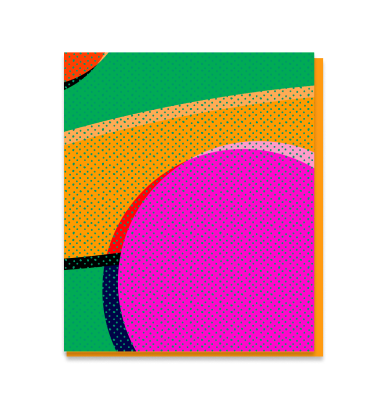
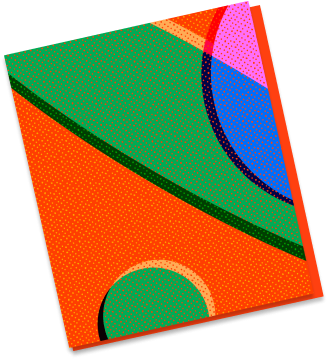
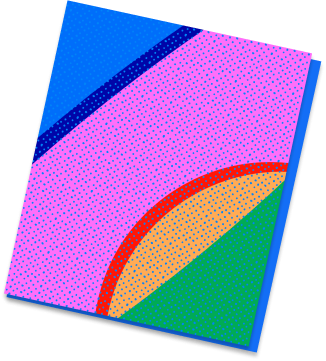
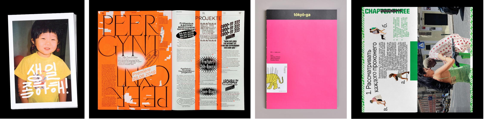
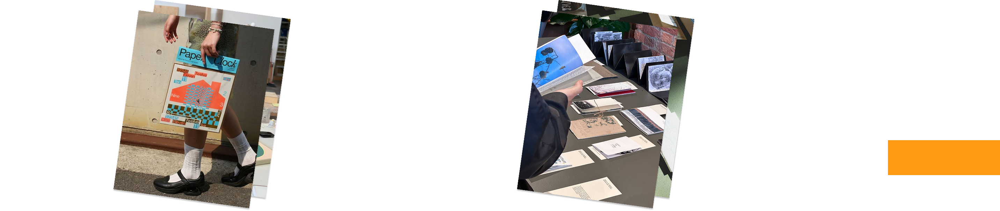
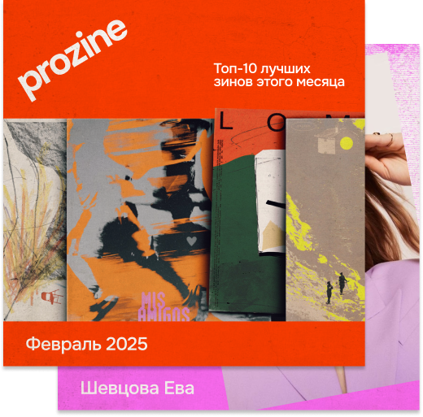

1
2
3
4



Веб-учебник по развитию личного бренда через зины
1
Вырази свою индивидуальность
Занимаешься творчеством и ищешь новые способы заявить о себе как о профессионале? Тогда тебе пора создать свой личный бренд. Электронный учебник Pro Zine поможет сделать это просто, быстро, весело и в необычном формате: через зины.

Зин — независимый авторский журнал, свободный от каких-либо рамок и выпускаемый небольшим тиражом


2
Зины помогают рассказывать истории
Почему мы учим личному бренду через зины? Зины — это площадка для экспериментов. Отсутствие
строгих
правил позволяет
найти свой визуальный стиль, а формат книги — простыми образами и словами донести свою историю.
Ещё одна
особенность зинов — тиражность. Зины всегда печатаются в нескольких экземплярах, чтобы их можно было показать
друзьям, обменять или продать. Хорошая возможность для продвижения своего творчества.
3
Содержание учебника

4
Наше коммьюнити в соцсетях
Подписывайся на наш канал в Telegram. Здесь мы публикуем эксклюзивные материалы, проводим розыгрыши и просто общаемся.
Перейти в Telegram


Если хочешь посотрудничать или высказать пожелания, пиши в тг @uvvorobyova